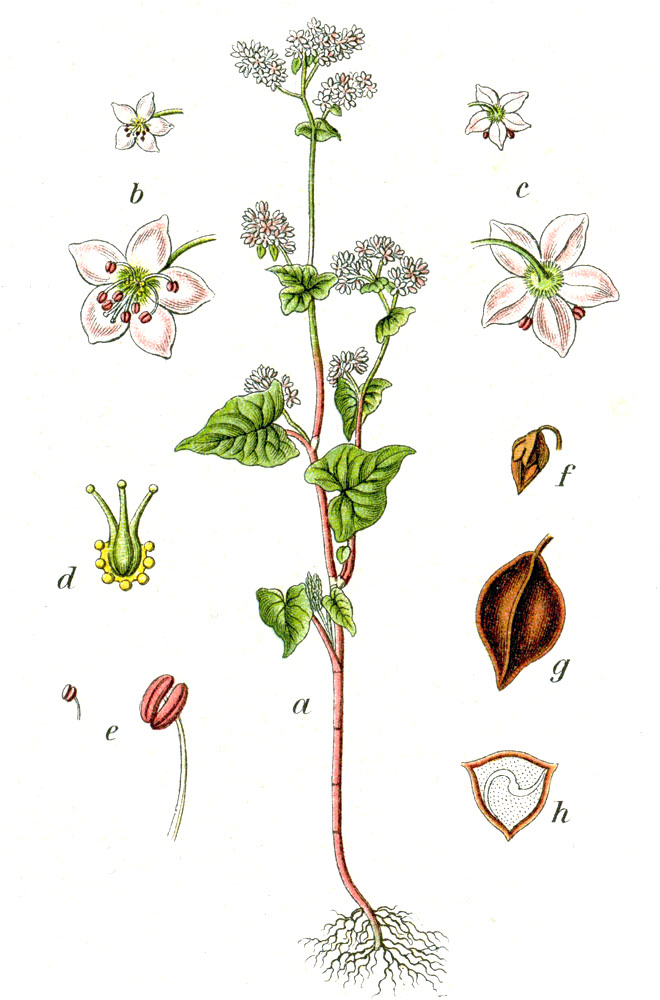

Descriptive Glossary
Fifty Canonical Descriptors
The following fifty terms constitute the approved vocabulary of the Estienne-Beauvoir Aroma System. Candidates for the Associate Buckwheat Sommelier examination are expected to employ a minimum of twelve of these terms, correctly applied, in each tasting note submitted to the examining panel.

Fagopyrum esculentum
The buckwheat plant produces small, five-petalled flowers of white to pale pink colouration, arranged in dense corymbs above the characteristic heart-shaped leaves. The triangular achene (the cultivated groat) develops within a tough hull of slate-green coloration, darkening to brown at maturity. The aromatic compounds that define each appellation's character develop during the grain's maturation and are preserved or transformed by the milling process. Above, a botanical rendering from Deutschlands Flora in Abbildungen, Johann Georg Sturm, 1796 — the earliest systematic colour illustration of the cultivated buckwheat plant.
Illustration: Johann Georg Sturm / Jacob Sturm, 1796. Public domain.
Mineral
Iron filings: The precise, cold metallic note characteristic of iron-rich Allegheny and Volga soils. Appears on the retronasal after extended evaluation. Distinguished from "rust" by its cleanliness and lack of oxidative character.
Wet slate: The cool, smooth minerality associated with metamorphic rock formations. A signature of high-elevation Allegheny and Japanese plateau terroirs. Often confused with wet granite; the distinction lies in the relative warmth of the latter.
Limestone dust: A pale, powdery minerality distinct from the denser iron or slate characters. Associated with the Pennsylvania Dutch Country and certain Breton appellations. Contributes structural backbone without aromatic weight.
River stone: The smooth, water-worn mineral character of alluvial terroirs. More rounded and less aggressive than iron or slate. The defining mineral note of Niigata's Uonuma basin cultivars.
Volcanic pumice: The airy, complex mineral character specific to volcanic soil cultivars. Hokkaido's defining terroir signature. Distinguished by a lightness and porosity that gives the impression of mineral complexity without density.
Granite: A warm, coarse mineral character associated with the Breton appellation's granitic bedrock. Heavier and more assertive than limestone dust; less cold than wet slate.
Nutty
Roasted hazelnut: The most prized of the nutty descriptors. Associated with properly kiln-dried groats of high starch content. Distinguished from "raw hazelnut" by the development of Maillard reaction compounds during drying.
Almond paste: A smooth, sweet-edged nuttiness that suggests the combination of benzaldehyde and fat compounds. Common in Manor and Pennquad cultivars. More yielding than hazelnut; less austere than walnut.
Grilled walnut: The aromatic compound produced when walnut's natural oils encounter moderate heat. Found primarily in Breton cultivars where coastal air influences the drying process. Smoky and nutty simultaneously.
Sesame: An elusive descriptor found almost exclusively in fine Japanese cultivars. Appears as suggestion rather than declaration; its absence is often more notable than its presence. Associated with superior terroir.
Sunflower seed: The mild, open nuttiness associated with Horizon and similar mid-Allegheny cultivars. More accessible than hazelnut; less complex than walnut. A descriptor of quality without pretension.
Marzipan: A composed, sweetened almond character found in certain Pennsylvania cultivars in warm harvest years. More formal than almond paste; less austere than raw nut. Signals a generous vintage with excellent sugar development.
Earthy
Black loam: The deep, complex earth character of chernozem soils. The signature descriptor of the Volga Basin appellation. Distinguished from ordinary earth by its richness and the impression of organic depth it conveys.
Dried mushroom: An umami-adjacent descriptor found in mature or cellar-rested cultivars. Common in Volga Basin and certain Pennsylvania expressions. Should be distinguished from fresh mushroom; the dried form implies concentration and complexity.
Forest floor: A complex descriptor encompassing decaying leaf matter, moss, and damp wood. Found in cultivars from humid, forested growing environments. More romantic and less precise than the preferred "autumn damp" descriptor.
Beet: The distinctive geosmin-adjacent character found in certain Volga Basin cultivars from particularly wet growing seasons. Earthy, sweet, and specific. An acceptable descriptor when present; not a compliment in excess.
Clay after rain: The precise, damp mineral-earth character of rain on dry clay. A descriptor unique to the Buckwheat Spectator vocabulary; not found in wine or tea evaluation systems. Specific to Allegheny plateau expression in wet harvest years.
Truffle: Reserved for exceptional cultivars of exceptional provenance. A complex, oxidative earth character that develops only in groats of the highest groat-sugar concentration. Use sparingly; misapplication devalues the descriptor.
Grain
Malted barley: The warm, yeasty-grain character associated with grain of high enzyme activity. Common in Allegheny cultivars after extended kiln-drying. Suggests complexity and nutritive density.
Toasted rye: The robust, slightly bitter grain character of properly kiln-dried rye-adjacent buckwheat. More assertive than barley; less sweet than wheat. Common in Volga Basin and certain Pennsylvania Dutch expressions.
Fresh grain barn: An environmental descriptor suggesting proximity to the source material. Clean, grassy, and honest. Found in young, unaged cultivars that have been minimally processed. Associated with terroir transparency.
Steamed rice: Specific to Japanese cultivars. The clean, light starch character of short-grain rice steamed without seasoning. A marker of textural refinement and milling precision. Absent in all Western cultivars to date.
Rice bran: The faint, nutty-grain character of the bran layer of unmilled rice. Found in well-structured Japanese cultivars as a secondary note to the primary steamed rice character. Signals superior agricultural practice.
Bran: The generic grain-husk character found in any cultivar where hull fragments have entered the flour. Can be a defect in excess; in appropriate proportion, signals rustic character and honest production.
Floral
Chamomile: The delicate, apple-adjacent floral note of dried chamomile. Associated with Pennsylvania Dutch Country cultivars grown in proximity to wildflower meadows. A pastoral and charming descriptor.
Jasmine: Specific to Japanese cultivars; found most consistently in Hokkaido plateau expressions. A high, precise floral note that appears in the retronasal passage after extended evaluation. Distinguished from rose by its cooler register.
Wild heather: The dry, resinous-floral character of moor heather. The signature floral descriptor of the Finistere appellation. Inseparable from the coastal mineral character that accompanies it in all great Breton cultivars.
Meadowsweet: A creamy, vanilla-adjacent floral note found in certain warm-harvest Allegheny cultivars. Softer than chamomile; more developed than plain "floral." A descriptor of generous growing conditions.
Lavender: Found exclusively in California appellation cultivars, where the Mediterranean climate supports lavender cultivation in proximity to buckwheat plots. Aromatic, distinctive, and not universally admired by European critics.
Smoky
Wood smoke: The principal smoky descriptor; associated with traditional kiln-drying over hardwood. The Petrovsky estate's use of oak and birch produces the most celebrated expression of this character in the contemporary registry.
Pipe tobacco: A complex smoky descriptor found in the extended finish of the finest Allegheny cultivars. Not a primary aroma but a finishing note that signals exceptional phenolic development. Associated with the Mancan Reserve at its best.
Charcoal: A cooler, denser smoky note than wood smoke. Associated with certain Volga Basin expressions where the kiln temperature during drying exceeds optimal parameters. Acceptable in proportion; a defect in excess.
Chaparral smoke: A descriptor unique to the California appellation. The aromatic character of sage and chaparral after controlled burning. Specific, evocative, and not replicable in other growing regions.
Fruity
Dried apricot: A concentrated stone-fruit sweetness found in the finest warm-vintage Allegheny cultivars. Appears as a mid-development note rather than a primary aroma. The descriptor that most reliably signals an exceptional harvest year.
Dried fig: The dense, jammy fruit character found in certain Manor and Horizon cultivars in warmer years. Heavier and more concentrated than dried apricot; less precise. Signals generosity rather than austerity.
White peach: Specific to Japanese cultivars. The delicate, barely-sweet stone-fruit note found in Koban and certain Niigata expressions. Distinguished from yellow peach by its cooler, more mineral quality.
Citrus peel: Found in California cultivars and certain Breton expressions from cool years. The bitter-aromatic quality of citrus pith, not the sweet pulp. Contributes brightness and acidity to the aromatic profile.
Raisin: A late-harvest descriptor found in cultivars where late September conditions have concentrated sugars beyond normal parameters. The boundary between "dried fruit" complexity and "over-ripe" is patrolled by the examining panel with vigilance.
Marine
Atlantic salt spray: The signature marine descriptor of the Finistere appellation. The precise saline mineral character of ocean air within 10 kilometres of the Atlantic coast. Not replicable inland; the Bourgeois-Lefebvre estate is the canonical reference.
Iodine: The sharp, antiseptic marine note associated with proximity to tidal zones and seaweed-rich coastal environments. Found in Grand Cru Breton cultivars and certain Japanese expressions from coastal growing locations.
Dried kelp: The umami-adjacent marine character found in certain Hokkaido and Niigata cultivars. Savoury, mineral, and complex. Distinguished from the more aggressive iodine note by its warmth and depth.
Wet schist: A composite mineral-marine descriptor specific to the Breton appellation. The character of rain on coastal metamorphic rock. Cold, precise, and impossible to mistake for any inland mineral character.
Ocean fog: The ambient descriptor of marine humidity without salt. Found in California cultivars from the coastal Ojai valley. Cooler and less assertive than Atlantic salt spray; more evocative than precisely descriptive.
Oyster shell: The precise, calcite-mineral character of empty oyster shells. Found in exceptional Breton cultivars from the finest coastal plots. A descriptor of prestige that the examining panel applies with appropriate discrimination.